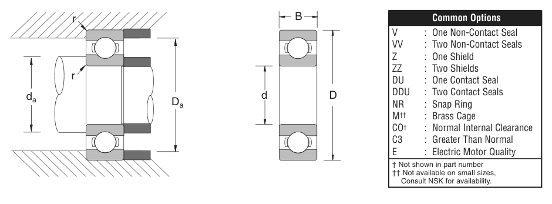

Original catalogue drawing - NSK catalogue, page 15

Scanned from the manufacturer catalogue page listing this part number. All part numbers printed on that table share the same drawing.
Scale cross-section
Blue = inner / outer ring, yellow = rolling element. Drawn to scale from this part's own
dimensions for selection reference only - not a manufacturing or assembly drawing.
Dimension table (mm / inch)
Symbol
Dimension
mm
inch
d
Bore diameter
190
7.4803
D
Outside diameter
290
11.4173
B
Inner-ring / bearing width
46
1.811
r
Chamfer (min)
2.007
0.079
Notes
Weights are given in kg. Load ratings are shown in both the original catalogue units and the converted value (1 N = 0.2248 lbf). Data is provided for selection reference only - confirm against the latest official catalogue before ordering.
Main dimensions
Bore d (mm)
190
Bore d (in)
7.4803
Outside dia. D (mm)
290
Outside dia. D (in)
11.4173
Width B (mm)
46
Width B (in)
1.8110
Load ratings & speeds
Basic dynamic load rating Cr (lbs)
42300
Basic static load rating Cor (lbs)
45200
Limiting speed - grease (rpm)
2,000
Limiting speed - oil (rpm)
2,400
Factor f0
15.8
Weight
Weight (kg)
11.113
Mounting dimensions (fillets / shoulders)
Chamfer r (in)
0.079
Shaft shoulder da min (in)
7.913
Shaft shoulder da max (in)
8.589
Housing shoulder Da max (in)
10.984
Bearing life (ISO 281 basic rating life)
C / P
Equivalent load P (N)
L10 (106 rev)
L10h at 600 rpm
4
47,040
64
1,778
6
31,360
216
6,000
8
23,520
512
14,222
10
18,816
1,000
27,778
15
12,544
3,375
93,750
Basic rating life per ISO 281: L10 = (C/P)3 with C = 188,160 N. Hours = L10 x 106 / (60n). Life-modification factors for lubrication, contamination and temperature (aISO) are not included.
Source & traceability
Brand
NSK
Source catalogue
NSK inch product catalogue
Catalogue page
p.17 (dimensions) / p.18 (ratings)
Dimensions in inches and millimetres, load ratings in lbs.
Send us the quantity you need and we will come back with price and
lead time, normally within 24 hours. Equivalent parts from other brands can be quoted at the same time.